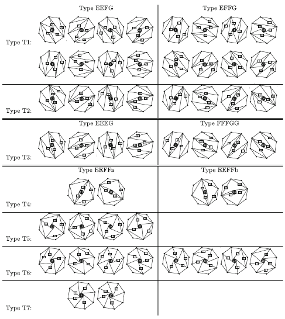

Articles
Preprints
- An effective solution to convex 1-body N-representability
- F. Castillo, J.-P. Labbé, J. Liebert, A. Padrol, E. Philippe, C. Schilling, May 2021
- Combinatorial foundations for geometric realizations of subword complexes of Coxeter groups
- J.-P. Labbé, July 2020
Publications
Quantum Theory
- Foundation of one-particle reduced density matrix functional theory for excited states J Liebert, F. Castillo, J.-P. Labbé, C. Schilling J. Chem. Theory Comput., accepted, 2021
Discrete Geometry
- Congruence Normality of Simplicial Hyperplane Arrangements via Oriented Matroids
 M. Cuntz, S. Elia, J.-P. Labbé,
Ann. Comb., (2021), in print.
M. Cuntz, S. Elia, J.-P. Labbé,
Ann. Comb., (2021), in print. - Combinatorial inscribability obstructions for higher-dimensional polytopes
J. Doolittle, J.-P. Labbé, C. Lange, R. Sinn, J. Spreer, G.M. Ziegler,
Mathematika, 66, (2020), no. 4, 927-953.
- Area difference bounds for dissections of a square into an odd number of triangles
J.-P. Labbé, G. Rote, G.M. Ziegler,
Exp. Math., 29, (2020), no. 3, 253-275.
- Fan Realizations of Type A Subword Complexes and Multi-associahedra of Rank 3
N. Bergeron, C. Ceballos, and J.-P. Labbé,
Discrete Comput. Geom., 54 (2015), no. 1, 195-231.
Combinatorics of Simplicial Complexes
- Bounds for entries of γ-vectors of flag simplicial spheres
J.-P. Labbé, E. Nevo,
SIAM J. Discrete Math., 31, (2017), no. 3, 2064-2078.
- Hirsch polytopes with exponentially long combinatorial segments
J.-P. Labbé, T. Manneville, and F. Santos,
Math. Program., 165 (2017), no. 2, 663–688.
Geometric Group Theory / Coxeter Groups
- Limit directions for Lorentzian Coxeter systems
H. Chen and J.-P. Labbé,
Groups Geom. Dyn., 11, (2017), 469-498.
- On inversion sets and the weak order in Coxeter groups
C. Hohlweg and J.-P. Labbé,
European J. Combin., 55, (2016), 1-19.
- Lorentzian Coxeter groups and Boyd-Maxwell ball packings
H. Chen and J.-P. Labbé,
Geom. Dedic., 74 (2015), no. 1, 43-73.
- Asymptotical behaviour of roots of infinite Coxeter groups
C. Hohlweg, J.-P. Labbé, and V. Ripoll, Canad. J. Math. 66 (2014), no. 2, 323-353.
Geometric Structures in Cluster Algebras
- Cluster Algebras of Type D4, Tropical Planes, and the Positive Tropical Grassmannian
S.B. Brodsky, C. Ceballos and J.-P. Labbé,
Beitr. Algebra Geom., 58, (2017), no. 1, 25-46.
We use the combinatorics of pseudo-triangulations of the octogon to
characterize the combinatorial types of generic tropical planes in the
tropical projective space of dimension 5.

- Subword complexes, cluster complexes, and generalized multiassociahedra
C. Ceballos, J.-P. Labbé and C. Stump, J. Algebraic Comb. 39 (2014), no. 1, 17-51.
We provide an interpretation of finite cluster complexes and
multi-triangulations using the combinatorics of subword complexes of Coxeter
groups.
Combinatorics
- Cambrian acyclic domains: counting c-singletons
J.-P. Labbé, C. Lange, Order, 37, (2020), no. 3, 571-603.
We provide lower and upper bounds for the number of common vertices of
associahedra and permutahedra stemming from Hohlweg--Lange--Thomas'
construction.
- Counting Types of Runs in Classes of Arborescent Words J.-P. Labbé and G. Labelle, Open Journal of Discrete Mathematics 3 (2013), no. 1, 7-15. We use species of structures to generalize the notion of runs in cointosses to general runs in arborescent words and obtain the generating series for various types of runs.
- Combinatorial variations on Cantor's diagonal
S. Brlek, J.-P. Labbé and M. Mendès France, J. Comb. Theory, Ser. A 119 (2012), no. 3, 655-667.
We use group actions in order to facilitate the enumeration of tableaux
which are finite analogues of Cantor's famous diagonal argument.
Unpublished Preprints
- A Perron theorem for matrices with negative entries and applications to Coxeter groups
- J.-P. Labbé, S. Labbé, November 2015
Conferences
It is possible to view the videos on my videos page.
- Universal Oriented Matroids for Subword Complexes of Coxeter Groups (Poster), FPSAC 2020, 8th July 2020
- Combinatorics and geometry of polyhedra in Sage, Global Virtual SageDays 109, 27th May 2020
- Convex Geometry of Subword Complexes, Nonlinear Algebra Seminar Online, Max Planck Institute Leipzig, 19th March 2020
- Experimental Coxeter Group Theory, Sage Days, Institute for Mathematics and its Applications, 23rd August 2017
Theses
- Convex Geometry of Subword Complexes of Coxeter Groups, Habilitationsschrift, Freie Universität Berlin, 2020
- Polyhedral Combinatorics of Coxeter Groups, Dissertation, Freie Universität Berlin, 2013
- Combinatorial approach to clusters using sortable elements of Coxeter groups [in French], Mémoire de maîtrise en mathématiques, UQAM, 2010, 105 p.
- Soyons des designers! [in French], Projet de fin d'études, Université Laval, 2008, 37 p.
Research visits
- Gradignan (France), February-March (2 weeks) 2011, with S. Brlek and M. Mendès France
- LaCIM-UQÀM, Montréal (Québec), June-July (2 weeks) 2011, with C. Hohlweg
- LaCIM-UQÀM, Montréal (Québec), August (2 weeks) 2012, with C. Hohlweg
- Jussieu/Polytechnique, Paris (France), February-March (2 weeks) 2013, with V. Pilaud and C. Lange
- Université de Paris Diderot-Paris 7, LIAFA, June (1 week) 2014, with S. Labbé
- Oberwolfach - Geometric and Algebraic Combinatorics, February 2015
- Universitad de Cantabria, Santander, Spain, February-March 2015, with F. Santos
- Universitad de Cantabria, Santander, Spain, September-October 2015, with F. Santos
- IMA, Minneapolis, USA, April 2018
- Research in Pairs, Oberwolfach, Germany, May 2019